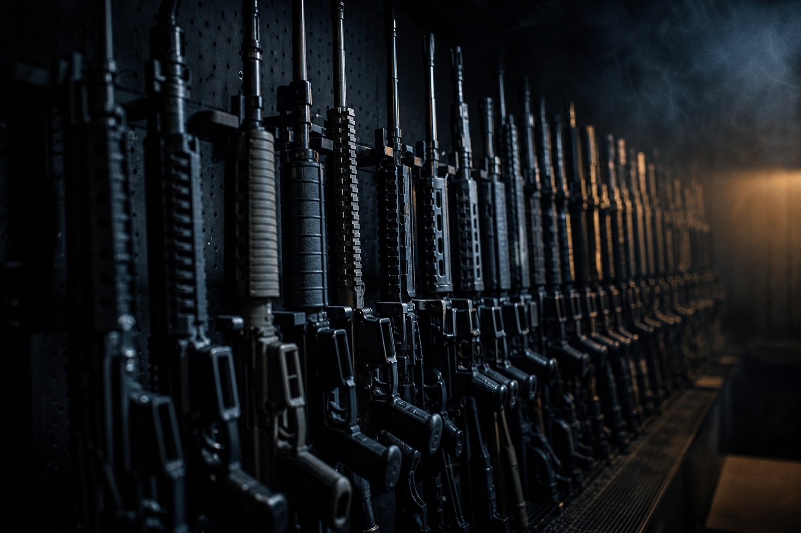

1. Comment on construit un tier list honnête
Une tier list d'ABI se juge sur cinq axes, jamais sur le seul « feeling » :
| Critère | Poids | Pourquoi |
|---|---|---|
| Tier de munitions | Décisif | Avec le RNG T5/T6 supprimé, une arme designed autour d'un calibre sans munitions disponibles est un jouet coûteux |
| Coût réel du kit | Décisif | Une arme à 500 K n'est pas « meilleure » : elle est inaccessible à la majorité |
| Portée effective | Fort | Augmentée en S7 : la portée distingue une arme de raid d'une arme de parc à tir |
| RPM / contrôle du recul | Fort | Le TTK est allongé en S7 : la cadence et la maîtrise du spray font la différence |
| Ergonomie | Moyen | Détermine la vitesse de manipulation, la prise en main et le bruit |
Le biais à éviter
Le plus gros biais du joueur est le gear fear : croire qu'une arme rare est meilleure. La citation de la communauté est la plus juste du jeu : « La meilleure arme dans n'importe quelle situation, c'est celle avec laquelle vous touchez vos tirs. Ignorez le meta jusqu'à pousser pour le Forbidden, et même là, utilisez ce qui marche pour vous. » Une AK-74N bien maîtrisée bat un A545 mal maîtrisée.
2. Le tier list global S7
| Tier | Armes | Rôle |
|---|---|---|
| S | A545, H416, U191, AK-12, M24, P90 | Fusils premium par défaut, « laser » AR à budget, menace de verrou, shredder CQB |
| A | AK-15SC, PCC9 + Fully-Automatic Kit, AN-94 / A94, FAL + Burst Kit, M110 + Binary Trigger, AR-57, AEK, F2000, Mk14, SJ16, RPK-16, Vector .45 | Spécialistes de carte et de rôle, plateformes réveillées par les season kits |
| B | MPX + Vulcan Barrel, MCX, M4A1, ACE31, AUG, VSS, USAS-12, T191 / T192 | Jouables avec la bonne munition et la bonne carte |
| C | MDR, FAMAS, Mini14, S12K, Banshee, Mosin, SKS, PCC9 (stock) | Remplisseurs à budget ou presses à niche |
Le résumé en une phrase
Pour la plupart des joueurs : H416 ou A545. Pour l'efficacité en Koen : AK-12. Pour le CQB pur : P90 ou PCC9 + Fully-Automatic Kit.
2 bis. Le meta par mode : Lockdown ou Forbidden
Un tier list global est rassurant, mais il répond à une question que personne ne pose en raid : dans quel mode vais-je jouer ? Depuis la Saison 7, la réponse change tout, parce que le plafond de gear n'est pas le même et que le coût des munitions haut de gamme interdit l'erreur. Le mode Lockdown autorise le T5 mais refuse les rouges : c'est le mode où l'économie décide de l'arme, pas le prestige.
| Mode | Plafond de gear | Armes privilégiées | Logique |
|---|---|---|---|
| Normal | T4 | AK-12, AR-57, PCC9, HK416, AK-15SC | Le mode où l'on fait ses Koen : un kit T4 bien construit y est déjà le maximum légal, donc un kit « premium » n'y a aucun intérêt |
| Lockdown | T5 | AK-12, HK416, AR-57, FAL, PCC9, A545 + BS | La munition T5 fait la différence : le BS en Lockdown est de niveau divin, mais l'A545 reste si coûteuse qu'elle est difficile à rentabiliser |
| Forbidden | T6 | A545 + BS, H416, U191, AK-12, M24 | Seul mode où le rouge est permis : l'A545 y a enfin un sens, parce que le plafond ne l'interdit pas |
L'AR-57 : l'arme que le tier list global sous-estime
Classée S en Lockdown et A en Forbidden par les guides de la saison, l'AR-57 est un SMG 5.7×28 très peu cher en munitions, qui excelle en combat rapproché — Armory, TV Station, les zones de motel de Farm. Elle est rangeable dans un sac et se bat très bien au contact. Dans le tier list global ci-dessus, elle figure en A ; en Lockdown, c'est une erreur de le lire ainsi.
Le corollaire économique est tout aussi important : l'AR-57 en A545 + BS est le kit de raid solvable, là où l'A545 seule est un kit de raid coûteux. Une arme qui brûle la munition à grande vitesse vide le chargeur et transforme chaque sortie en dépense.
Ce que dit la communauté, et ce qu'il faut en retenir
Sur Reddit, les avis de la saison convergent : « L'A545 a l'air trop chère pour ce qu'elle est, et n'a de sens qu'en Forbidden », « Le BS en Lockdown, c'est de niveau divin », « Du T5 dans n'importe quelle arme, c'est de niveau divin », et en contrepoint « Le BP est inutile, même contre du T4 ». Le point technique qui revient le plus souvent est que la 5.45 fait moins de dégâts que les autres calibres de fusil et a une portée médiocre : l'A545 est une arme de stats, pas une arme de-distance.
Les créateurs de contenu, eux, ajoutent la couche terrain. Un loadout Lockdown solo publié le 31 octobre 2026 combine un casque SH Masca et un gilet H-Tag — « le gilet le moins cher du marché, pour pouvoir emmener une bien meilleure arme » — avec un fusil calibré 2×3 pour ranger les objets de la Fédération, et s'appuie sur le perk de Rush pour vider rapidement les sacs des adversaires : on y place son propre sac, on y entasse le butin et on repart. Le conseil est simple et difficile à contester : l'armure la moins chère qui laisse passer la meilleure arme disponible.
La règle du budget, validée le 14 novembre 2026
Le guide de budget le plus récent du jeu (mis à jour le 14 novembre 2026) résume la position dominante de la communauté en une phrase : « La munition EST le loadout. » Un fusil à 200 K avec la bonne munition bat un fusil à 40 K mal approvisionné. En Normal, où le plafond est T4, la munition T4 (M855A1 en 5.56×45, BP en 7.62×39) est à la fois le plafond légal et le plancher à ne jamais descendre. Et l'armure T6 est un piège : illégale en Normal, et trop chère à perdre.
3. Tier list par catégorie
| Catégorie | S | A | B / C |
|---|---|---|---|
| Fusils d'assaut | A545, H416, U191, AK-12 | AK-15SC, AN-94, AEK, F2000, FAL + Burst Kit | MCX, M4A1, ACE31, AUG, MDR, FAMAS, SKS |
| DMR | — | M110 + Binary Trigger, Mk14, SJ16 | VSS, MDR |
| Snipers | M24 | SJ16 | Mosin, Mini14 |
| SMG | P90 | Vector .45, AR-57, MPX + Vulcan | MPX (stock), MP5, Banshee, T191/T192 |
| Shotguns | — | — | USAS-12, S12K (T4 en 12ga) : le meta des zones infectées |
| LMG | — | RPK-16, AEK | MG3 (squad uniquement, pénalité de mobilité lourde) |
4. L'impact réel des season kits
Les season kits sont le vrai moteur de reclassement de la Saison 7. Ce ne sont pas des accessoires : ils modifient la nature de l'arme.
| Arme | Kit | Effet | Effet sur le tier |
|---|---|---|---|
| PCC9 | Full-Auto Kit | Ajoute le mode automatique complet | D → A en test : recul quasi nul, tenue de porte |
| M110 | Binary Trigger | 2 projectiles par gâchette | A : devient un vrai mark de précision à l'overwatch |
| FAL | Burst Kit | Cadence de « moyennement-faible » à « élevée » | A : dégâts stables à bas RPM, Lockdown/Forbidden |
| MPX | Barrel Vulcan | Branche de munitions à chair | B confirmé : nouveau profil de dégâts |
| UMP45 | Parties de modification | Nouvelles pièces, « pas Overpowered » selon l'éditeur | Reste en milieu de tableau |
Les kits expirent en fin de saison
MoreFun l'a confirmé : les season kits seront retirés à la fin de la saison, et un nouveau lot remplacera celui-ci pour d'autres armes. Un kit de saison est donc un investissement à court terme — n'achetez jamais un skin d'une arme que vous n'utilisez que grâce à un kit saisonnier.
5. Tier list par carte
| Carte | À privilégier | À éviter |
|---|---|---|
| TV Station | P90, PCC9 + Full-Auto, AK-15SC | Snipers en primaire |
| Farm / Armory | H416, A545, FAL + Burst Kit | SMG pure comme seule arme |
| Valley / Northridge | M24, M110 + Binary, U191, SJ16 | SMG à canon court en primaire |
| Airport | Fusil polyvalent + un plan CQB secondaire | Les kits « un seul coup à 130 m » |
| Zones infectées | USAS-12, S12K, MP5, MPX + dum-dum | Les munitions T5/T6 contre des bots |
6. Le meta spécifique des modes zombies
Contre les IA, la pénétration est du gaspillage
Utiliser de la 5.45×39 ou de la 5.56×45 meta contre des zombies est un suicide financier. Les mutants ne portent pas d'armure T6 : ce qui compte, c'est le dégâts de groupe. Le combo gagnant est shotgun + munitions à chair : un USAS-12 ou un S12K, puis du dum-dum 9×19 pour les jambes.
- Infected Zone : le lootPvP compte autant que les zombies — un fusil d'assaut T4 est un bon compromis.
- Zombie Endless : la classe est imposée et le loadout fourni : le shotgun est roi parce qu'il touche plusieurs ennemis d'un tir.
- No Man's Land : entraînement, pas de loot : le coût est secondaire, seul compte l'apprentissage des mutations.
7. Le tier list des armures
| Tier | Pièces de référence | Matériau | Usage |
|---|---|---|---|
| T6 | BT101, 926 Composite, BT6 | Céramique / Composite / Acier | Forbidden uniquement. BT101 : 120 de durabilité, mais 9,8 kg |
| T5 | Hvk, 6B43, BT5 | Céramique / Composite / Acier | Lockdown. Le meilleur compromis protection / mobilité |
| T4 | 6B13, 6B23, 6B45 | Composite / Kevlar | Le cœur du meta Normal. 6B13 : 46 d'ergonomie, 5,9 kg |
| T3 | 6B62, KN, 6B12 | Kevlar | Budget, mais 55–60 de durabilité seulement |
| T2 | 6B2 | Kevlar | Le kit du débutant : 30 000 K, 2,8 kg, 38 de durabilité |
| T1 | Gilet tactique | Nylon | 10 000 K. Symbolique, mais ça évite le nudisme en début de raid |
Le réflexe anti-gear-fear
Un 6B13 T4 à 150 000 K avec 46 d'ergonomie est meilleur qu'un BT101 à 450 000 K avec 28 d'ergonomie pour 90 % des combats. Le sur-équipement est un choix, pas une obligation : c'est un pari sur votre propre taux de survie.
8. L'armurerie de référence (données du site)
Le catalogue complet des 24 armes de référence, trié par tier et par cadence de tir.
8 bis. Le catalogue complet : 77 armes documentées
La grille ci-dessus ne montre que 24 armes — celles pour lesquelles le site dispose d’un tier, d’un prix et d’une photo. La source de référence en documente 77. Voici les 77, avec leurs statistiques brutes. Ce ne sont pas des recommandations : ce sont des mesures, et c’est au lecteur d’en tirer son équipement.
Comment lire ce tableau
- Toutes les valeurs sont sur une échelle de 0 à 100, sauf la cadence (tours par minute), la vitesse du projectile (m/s) et le poids (kg).
- Recul vertical et horizontal : plus la valeur est élevée, plus le tir est violent. Le rapport entre les deux compte autant que leur valeur — un recul horizontal fort est celui qui fait partir la balle à côté.
- Portée : la distance à laquelle l’arme reste efficace, pas la portée théorique.
- Vitesse du projectile : à à 700 m/s, la balle commence à perdre de l’énergie ; c’est ce qui sépare un fusil de précision d’un fusil d’assaut à courte distance.
- Stabilité à l’hipfire : la capacité à tenir le tir sans viser. C’est le critère qui décide si une arme tient en intérieur.
- Ni tier ni prix ici : cette source ne les publie pas. Les valeurs de marché du site (section 8) restent la référence pour l’économie.
| Arme | Catégorie | Calibre | Modes | Rec. V | Rec. H | Erg. | Stab. | Préc. | Hip. | Portée | Vit. (m/s) | Cadence | Poids |
|---|---|---|---|---|---|---|---|---|---|---|---|---|---|
| Chargement du catalogue… | |||||||||||||
Source : wiki ABI de référence (Fandom), page Weapons. Donnée
documentée et recoupée, non publiée par l’éditeur. Fichier de données :
js/data-weapons-wiki.json.
9. Le tier list par tier
10. FAQ tier list
Quelle est la meilleure arme de la Saison 7 ?
H416 ou A545 pour la plupart. AK-12 pour l'efficacité en Koen. P90 ou PCC9 + Fully-Automatic Kit pour le CQB.
Les LMG valent-ils le coup ?
Sélectionnellement oui : le RPK-16 (600 RPM, chargeur 60) et l'AEK (800 RPM) offrent un vrai potentiel de suppression. Le MG3, lui, reste réservé au squad : sa pénalité de mobilité est un arrêt de mort en solo.
Quel est le meilleur kit budget ?
Le build MPX à ~160 000 K avec de l'AP 6.3 en PL 3 pour le CQB, ou le FAL à ~260 000 K pour le meilleur rapport qualité-prix en fusil. Voir l'optimiseur de loadout.
Les bots faussent-ils la tier list ?
Oui, fortement. Les IA de Lockdown dotées d'armure T4 neuve et de munitions T4 — on en trouve même dans les missions — creusent l'écart entre le kit et le terrain. Une tier list « PvP pure » serait différente, mais elle ne correspondrait plus à votre expérience réelle.
Pour les builds complets, voir le guide des builds par rôle. Pour la méthode, voir le guide des stratégies S7.
11. Sources de cette page
Références utilisées pour cette page
- Tier list et loadouts S7 (mmoexp) — classement AR-57 S en Lockdown / A en Forbidden, priorités Lockdown (AK-12, HK, AR-57, FAL, PCC). mmoexp.com (nouvel onglet)
- Reddit — S7 Weapons You Should Try — avis d'arms dealers sur le coût de l'A545, le BS en Lockdown, le T5 « god tier » et la faiblesse de la 5.45. reddit.com (nouvel onglet)
- YouTube — Season 7 BEST Loadout For LOCKDOWN — canal Buggy, 31 octobre 2026 : casque SH Masca, gilet H-Tag, perk Rush, emplacement 2×3. youtube.com (nouvel onglet)
- Best Budget Loadout S7 (timesaver) — mis à jour le 14 novembre 2026 : la munition comme loadout, M855A1 et BP en T4, T6 useless en Normal. timesaver.gg (nouvel onglet)